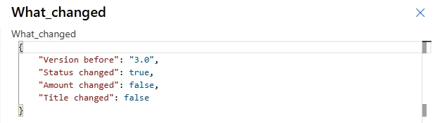

- Power Automate
- Level 8 · Real-world patterns · 2 of 8
Guarding trigger loops and detecting column changes
A flow that starts When an item is modified and then updates the same item modifies it again, which starts the flow again: an endless loop. The same trigger also fires for edits that don't matter.
The loop and how to break it
WhatTrigger conditions that ignore the flow's own edits, plus Get changes to see which column changed.
WhyEndless loops burn requests and can flood people with messages.
DemoChange only Status, then ask SharePoint what changed.
The self-trigger loop
Item modified → flow runs
Flow updates the same item
Does a trigger condition ignore the flow's own edit?
No
↺ the update triggers the flow again, forever
Yes
Loop broken
| Approach | Trigger condition |
|---|---|
| Ignore edits by the flow's account | @not(equals(triggerOutputs()?['body/Editor/Email'], 'svc-flows@contoso.com')) |
| Only a specific status | @equals(triggerOutputs()?['body/Status/Value'], 'Approved') |
| A Processed flag the flow sets | @not(equals(triggerOutputs()?['body/Processed'], true)) |

Did this column change?
Get changes
Read the item's version: 3.0
Change only Status
Get changes for an item or a file (properties only) since 3.0
A true/false per column
What changed
| Column | ColumnHasChanged/… |
|---|---|
| Status | true |
| Amount | false |
| Title | false |


outputs('Get_changes_since_start')?['body/ColumnHasChanged/Status']| Piece | What it does |
|---|---|
ColumnHasChanged/Status | True if Status changed since the given version. |
A real error from the demo
| Since = | Result |
|---|---|
| a date and time | Failed Invalid format for version input value |
a version label, e.g. 3.0 from {VersionNumber} | Succeeded |
In a triggered flow, use the trigger's window start token instead. Versioning must be on for the list.
New to this? Start from the basics optional
Version history: SharePoint keeps a numbered copy each time an item is saved, if versioning is on.
Common mistakes
- No guard on a flow that updates its own trigger item.
- Passing a date as Since.
- Versioning off, so Get changes can't compare.